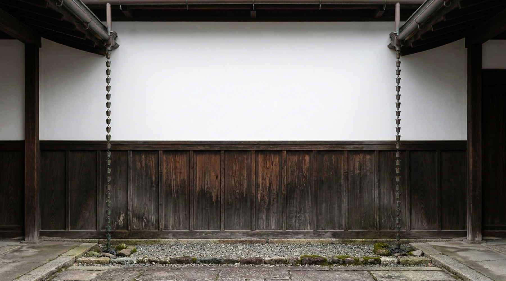
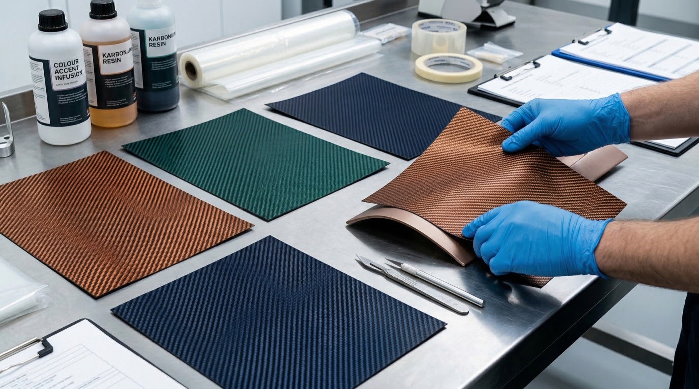
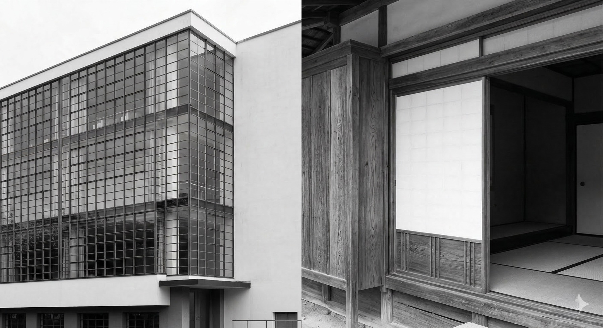
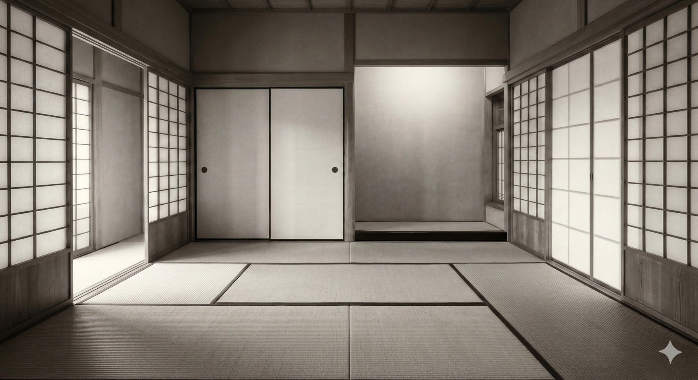
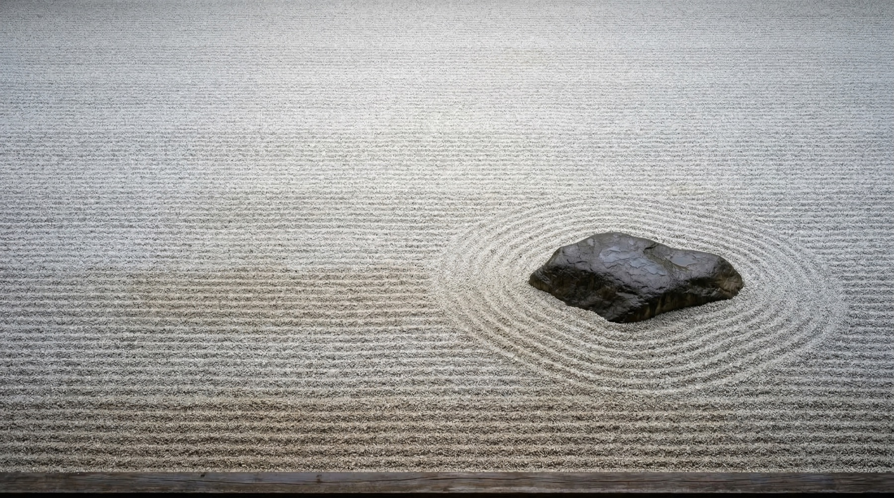

![[PLACEHOLDER] Notan interior — white leather + Karbonium](images/notan-collection/car-interior-placeholder.jpg)
[Placeholder] Interior — white leather, green Karbonium, copper hardware.
[Placeholder] Exterior — two-tone beltline, Sport Silhouette.
Expression Model · Spring Summer 2026
Light-dark harmony. Where two tones compose a single truth.
In sumi-e ink wash painting, the blank paper is the composition as much as the brushstroke. What remains untouched carries the same weight as what is marked. The empty space holds its own weight.
Notan is the art of seeing both sides at once — dark needs light, light needs dark. Neither is the subject. The conversation is.
"Dark needs light. Light needs dark."
Sumi-e — where the brushstroke and the emptiness are equal.

Two-tone facade — white plaster above, dark wood below. The beltline of architecture.
Karbonium. Beyond standard carbon fiber — this is carbon that carries color — deep teal-green, copper-bronze, midnight blue. The carbon twill weave pattern remains visible, but the material transforms from technical to expressive.
Against white leather, these colored Karbonium accents create the interior's ink strokes. Each panel a mark on the page. Each surface a decision between presence and restraint.
Copper and bronze hardware — speaker surrounds, door handles, vent rings — provide the warm metallic third voice. The mediator between dark and light.
The moment before the stroke — intention held in stillness.
The interior begins with white leather — the blank page. Against this, colored Karbonium accents appear like calligraphic marks: precise, irreversible, alive. A teal-green carbon weave on the console. A copper-bronze panel framing the instrument binnacle.
The hardware speaks in warm metallics. Copper speaker surrounds. Bronze door handles. Every metal element is a bridge between the dark accents and the white ground — the third voice in the Notan dialogue.
"The blank page is not empty. It is waiting."

Karbonium — carbon fiber, given color. Green, copper, blue on the workshop table.


Bauhaus meets shoji — where Western grid finds Eastern breath.
Empty tatami — the room that is complete without furniture.
[Placeholder] HOF G · V — Notan · White & Schwarzwald Green · Side Profile
[Placeholder] Interior — white leather, green Karbonium, copper hardware.
[Placeholder] Exterior — two-tone beltline, Sport Silhouette.
Every Notan exterior is two-tone by principle. The beltline divides the car like a calligrapher's stroke divides the paper — considered, irreversible, alive.
White cabin over dark green body. Champagne meeting black. Orange against forest. Dark blue dissolving into light blue. Each pair a dialogue, each dialogue complete.
Two tones. One composition. The way a sumi-e master chooses where to leave the paper bare. What you see and what you don't see carry equal weight.
"Each pair a dialogue. Each dialogue complete."
Silver fog — where form dissolves into atmosphere.

Zen garden — the art of composing with what you remove.
Japanese joinery — where two halves become one without compromise.
The art of seeing both sides at once. Dark needs light. Light needs dark. The conversation is the composition.
Sport Silhouette. Standard Doors. Karbonium. Every surface a decision between mark and space, between presence and restraint. Four two-tone compositions, each one a complete thought.
Spring Summer 2026. The moment where two tones compose a single truth.
"Curated, Not Made."
Four two-tone dialogues, one principle of harmony. Discover the full Spring Summer 2026 collection — or begin your personal consultation.